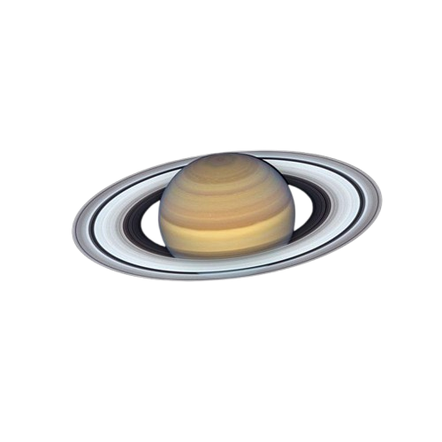

THE RINGED PLANET
SATURN
Saturn is a magnificent gas giant famous for its spectacular rings made of ice, rock, and dust. It is one of the most beautiful worlds in our Solar System.
146
Known Moons
29.4
Earth Years per Orbit
1,205
Million km²?

Discover Saturn
Saturn's rings stretch far into space, yet they are surprisingly thin compared with their enormous width. The planet is mostly made of hydrogen and helium.
Beautiful Rings
Saturn's rings contain countless pieces of ice and rocky material.
Gas Giant
Saturn has no solid surface like Earth. Its atmosphere contains hydrogen and helium.
Extreme Winds
Powerful winds race through Saturn's atmosphere at incredible speeds.